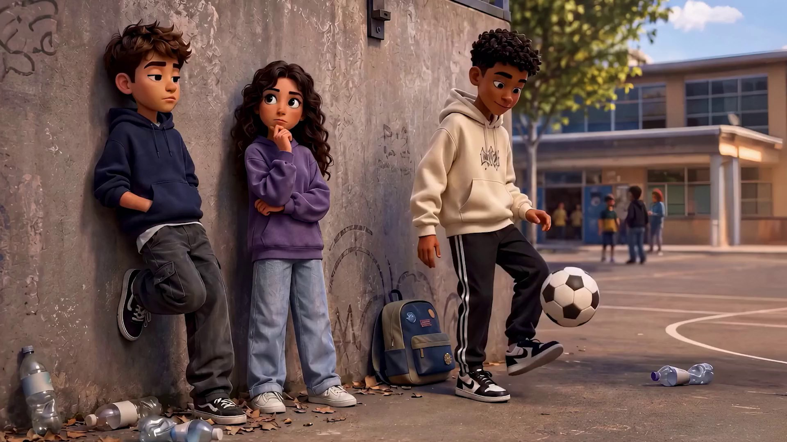
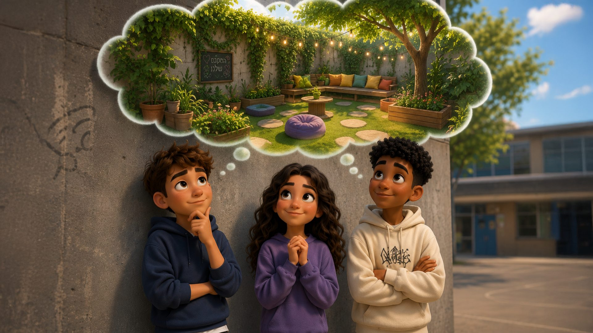
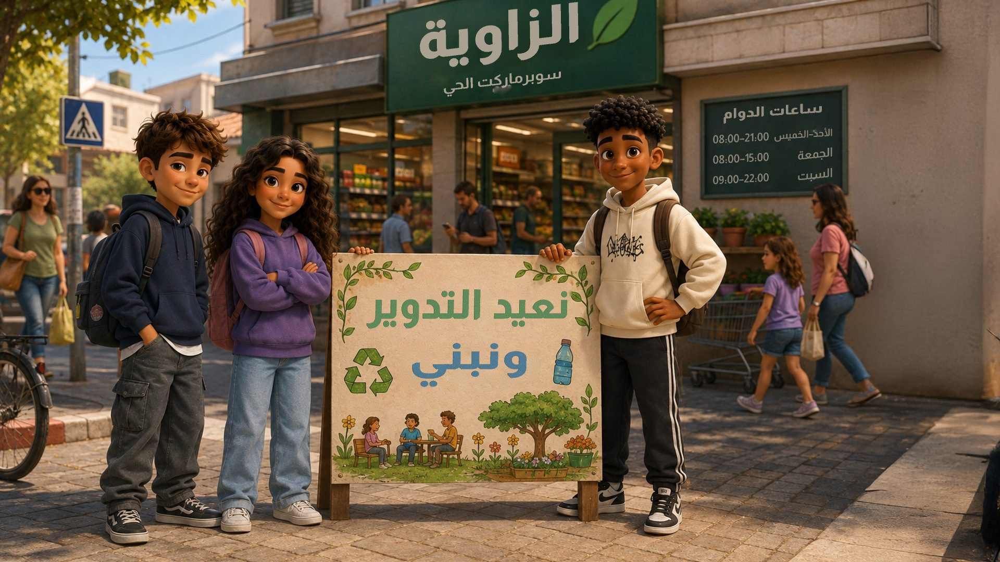
قرر مجلس الطلّاب في المدرسة الانضمام إلى المشروع وأطلق عليه اسم "نعيد التدوير ونبني".
سيجمع جميع الطلّاب زجاجات الإيداع خلال السنة الدراسية، وسيُستخدم المال الذي سيُجمع لبناء زاوية جلوس في ساحة المدرسة.
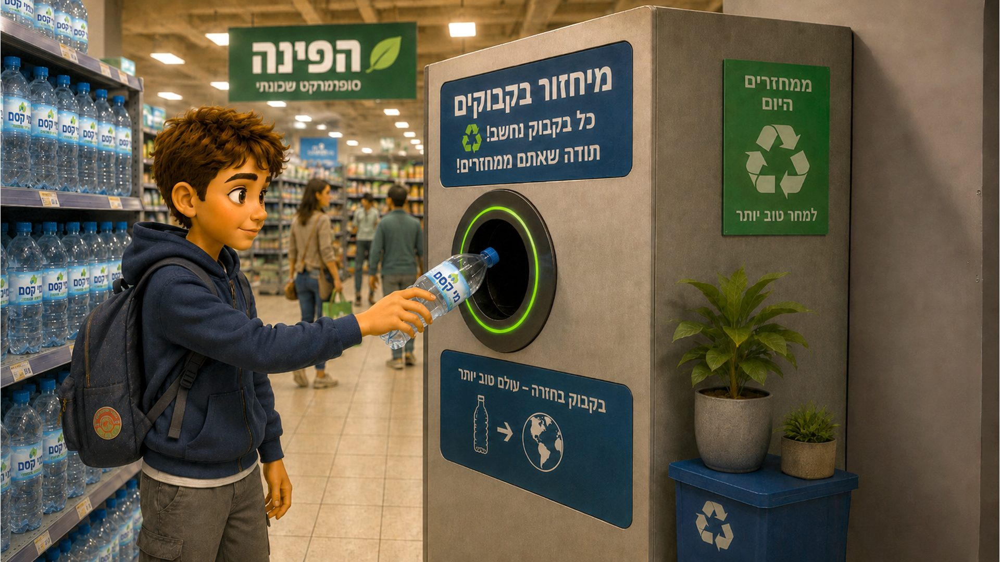
بحث مجلس الطلّاب ووجد ما يلي:
رسوم الإيداع: المبلغ الذي نحصل عليه مقابل كل زجاجة فارغة نعيدها.
تبلغ رسوم الإيداع حاليًا 30 أغورة للزجاجة.
هل سبق لكم أن أعدتم تدوير الزجاجات؟
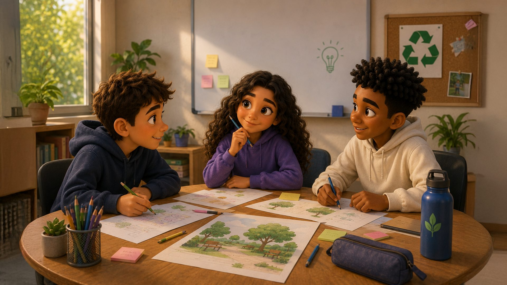
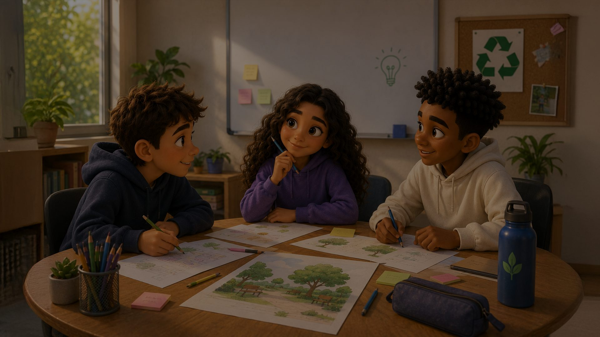
تلميح: يمكن استخدام قانون التوزيع لحساب عدد الزجاجات.
السؤال رقم 1
يتعلّم في مدرسة "البستان" 470 طالبًا.
طُلب من كل طالب جمع 15 زجاجة فارغة في الشهر الأول استعدادًا لإطلاق المشروع.
أنجز جميع الطلّاب المهمة!
كم زجاجة جُمعَت بالإجمال في مدرسة "البستان" في هذا الشهر؟
أكملوا الأعداد الناقصة:
470 × 15 = 470 × 10 + 470 × = + =
هذه ليست الإجابة، حاولوا مرّة أخرى.
إجابة صحيحة
أنجز جميع الطلّاب المهمة وجمعوا 7,050 زجاجة في الشهر الأول.
الحساب الذي أجريناه:
15 × 470 =
5 × 470 + 10 × 470 =
2,350 + 4,700 =
7,050
إجابة خاطئة
أنجز جميع الطلّاب المهمة وجمعوا 7,050 زجاجة في الشهر الأول.
الحساب الذي أجريناه:
15 × 470 =
5 × 470 + 10 × 470 =
2,350 + 4,700 =
7,050
تلميح: جمعت طبقة الروابع 30 زجاجة أكثر من طبقة الثوالث.
ماذا يعني هذا بالنسبة لعدد الطلّاب في طبقتي الثوالث والروابع؟
السؤال رقم 2
قام المجلس الطلّابي في المدرسة بتركيز عدد الزجاجات التي جمعها تلاميذ كلّ طبقة في جدول.
تذكّروا، جمع كل طالب 15 زجاجة.
اسحبوا الأعداد الملائمة إلى مكانها المناسب في الجدول (انتبهوا، فقط قسم من الأعداد ملائم).
| الطبقة | عدد الطلّاب | عدد الزجاجات التي جُمعَت |
|---|---|---|
| طبقة الأوائل | 62 | |
| طبقة الثواني | 66 | |
| طبقة الثوالث | 1500 | |
| طبقة الروابع | 1530 | |
| طبقة الخوامس | 67 | 1,005 |
| طبقة السوادس | 73 | 1095 |
هذه ليست الإجابة، حاولوا مرّة أخرى. يمكنكم النقر على زر المساعدة للحصول على تلميح.
إجابة صحيحة
هذه هي الإجابات الصحيحة.
يجمع كل طالب 15 زجاجة بالضبط حسب بيانات المجلس. نضرب عدد الطلّاب في 15 لإيجاد عدد الزجاجات.
نقسم عدد الزجاجات التي جُمعت على 15 لإيجاد عدد الطلّاب.
إجابة خاطئة
هذه هي الإجابات الصحيحة.
يجمع كل طالب 15 زجاجة بالضبط حسب بيانات المجلس. نضرب عدد الطلّاب في 15 لإيجاد عدد الزجاجات.
نقسم عدد الزجاجات التي جُمعت على 15 لإيجاد عدد الطلّاب.
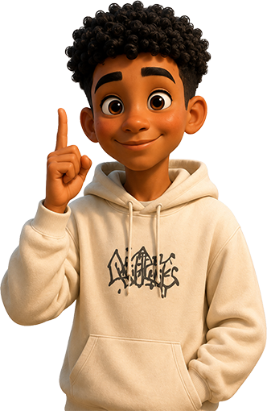
خطرت لي طريقة حساب أخرى...
لا حاجة إلى حساب كل شيء من جديد لإيجاد الإجابة.
بعد أن وجدت عدد الزجاجات التي جمعها تلاميذ طبقة الأوائل، لاحظت أنّه يوجد في طبقة الثواني 4 تلاميذ أكثر ممّا في طبقة الأوائل.
جمع كل تلميذ 15 زجاجة، لذلك جمع تلاميذ طبقة الثواني 60 زجاجة إضافية.
حسب المعطيات جمعت طبقة الروابع 30 زجاجة أكثر من طبقة الثوالث.
أعرف أن كل طالب جمع 15 زجاجة، لذلك أفهم أن في طبقة الروابع طالبين إضافيين.
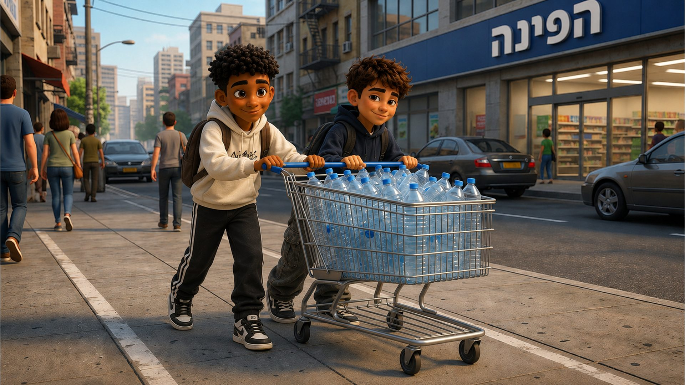
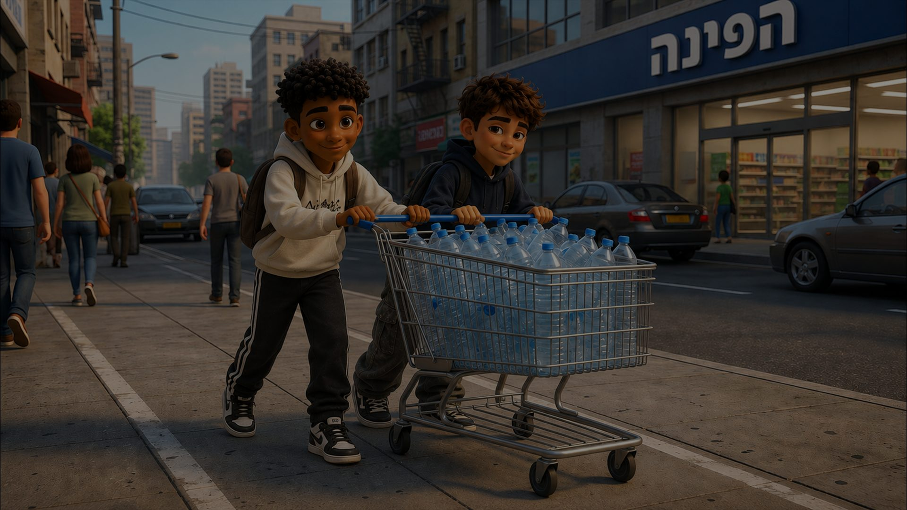
السؤال رقم 3
نجح طلّاب مدرسة "البستان" في جمع 20,000 زجاجة خلال فترة معينة.
كم أغورة جمعت المدرسة بالإجمال مقابل هذه الزجاجات؟
تذكّروا، نحصل على 30 أغورة مقابل كل زجاجة.
اكتبوا الحلّ في الخانة:
أغورة.
هذه ليست الإجابة، حاولوا مرّة أخرى.
إجابة صحيحة
نضرب عدد الزجاجات التي جُمعت في 30 أغورة عن كل زجاجة:
20,000 x 30 = 600,000
جمع الطلّاب 600,000 أغورة.
إجابة خاطئة
نضرب عدد الزجاجات التي جُمعت في 30 أغورة عن كل زجاجة:
20,000 x 30 = 600,000
جمع الطلّاب 600,000 أغورة.
تلميح: كل 1 شيكل يساوي 100 أغورة.
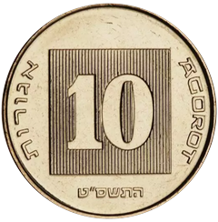
السؤال رقم 4
رأينا أن طلّاب مدرسة "البستان" جمعوا 600,000 أغورة مقابل
الزجاجات التي جمعوها.
ما هو مبلغ المال بالشيكل الذي جمعه طلّاب المدرسة؟
اكتبوا الحلّ في الخانة:
شيكل.
هذه ليست الإجابة، حاولوا مرّة أخرى.
إجابة صحيحة
كل شيكل يساوي 100 أغورة.
يجب قسمة عدد الأغورات على 100 لإيجاد عدد الشواكل.
الحساب هو: 600,000 : 100 = 6,000
600,000 أغورة تساوي 6,000 شيكل.
إجابة خاطئة
كل شيكل يساوي 100 أغورة.
يجب قسمة عدد الأغورات على 100 لإيجاد عدد الشواكل.
الحساب هو: 600,000 : 100 = 6,000
600,000 أغورة تساوي 6,000 شيكل.
تلميح: أوجدوا عدد الزجاجات التي تساوي ثلث الهدف السنوي.
انتبهوا إلى كمية الزجاجات التقريبية التي جُمعت في الشهر الأول والثالث معًا.
السؤال رقم 5
يريد مجلس الطلّاب جمع 90,000 زجاجة حتى نهاية العام (خلال 10 أشهر دراسية).
توجّه الممثلون إلى سكّان الحي لطلب المساعدة في جمع الزجاجات.
سعد سكّان الحي بتقديم المساعدة وأحضروا إلى المدرسة زجاجات كثيرة!
جُمعت الكميات التالية من طلّاب المدرسة وسكّان الحي في الأشهر الثلاثة الأولى:
- الشهر الأول: 14,800 زجاجة
- الشهر الثاني: 10,410 زجاجة
- الشهر الثالث: 15,280 زجاجة
اختاروا الإجابة المناسبة دون إجراء حساب دقيق.
جمع الطلّاب حتى الآن أكثر منأقل منبالضبط ثلث هدفهم السنوي.
هذه ليست الإجابة، حاولوا مرّة أخرى. يمكنكم النقر على زر المساعدة للحصول على تلميح.
جمع الطلّاب أكثر من ثلث الهدف السنوي.
جُمع أكثر من 10,000 زجاجة في كل شهر من الأشهر الثلاثة، لذلك جُمع في المجموع أكثر من 30,000 زجاجة.
30,000 هي ثلث (13) من 90,000، لذلك يمكن الجزم بأنه جُمع أكثر من ثلث هذه الكمية.
جمع الطلّاب أكثر من ثلث الهدف السنوي.
جُمع أكثر من 10,000 زجاجة في كل شهر من الأشهر الثلاثة، لذلك جُمع في المجموع أكثر من 30,000 زجاجة.
30,000 هي ثلث (13) من 90,000، لذلك يمكن الجزم بأنه جُمع أكثر من ثلث هذه الكمية.
خطرت لي فكرة لشرح إضافي!
يمكن تقريب عدد الزجاجات في كل شهر إلى الآلاف لتقدير عدد الزجاجات التي جُمعت:
نقرّب 14,800 إلى 15,000.
نقرّب 10,410 إلى 10,000.
نقرّب 15,280 إلى 15,000.
نحسب: 15,000 + 10,000 + 15,000
جُمع نحو 40,000 زجاجة في المجموع حسب التقدير، أي أكثر من ثلث 90,000 زجاجة.
السؤال رقم 6، بند أ
يعرض المخطّط أمامكم العدد المقرَّب للزجاجات التي جُمعَت في الطبقات من الأول حتى السّادس في المدرسة خلال الأشهر الثلاثة الأخيرة من المشروع:
أيُّ الطبقات جمعت أكبر كمية من الزجاجات؟
اختاروا الإجابة الصحيحة:
هذه ليست الإجابة، حاولوا مرّة أخرى.
إجابة صحيحة
جمع طلّاب طبقة الثوالث والروابع معًا أكبر عدد من الزجاجات حسب المخطّط - حوالي 10,000 زجاجة.
إجابة خاطئة
جمع طلّاب طبقة الثوالث والروابع معًا أكبر عدد من الزجاجات حسب المخطّط - حوالي 10,000 زجاجة.
السؤال رقم 6، بند ب
جمع سكّان الحي في الأشهر الثلاثة الأخيرة عددًا من الزجاجات يساوي ما جمعه جميع طلّاب المدرسة في الفترة نفسها.
أضيفوا مستطيلًا مناسبًا لعدد الزجاجات التي جمعها سكّان الحي.
انقروا على السهم وجرّوا الفأرة لرسم المستطيل المناسب.
هذه ليست الإجابة، حاولوا مرّة أخرى.
إجابة صحيحة
نحسب عدد الزجاجات التي جمعها جميع طلّاب المدرسة:
7,500 + 10,000 + 8,000 = 25,500
عدد الزجاجات التي جمعها سكّان الحي هو: 25,500
إجابة خاطئة
نحسب عدد الزجاجات التي جمعها جميع طلّاب المدرسة:
7,500 + 10,000 + 8,000 = 25,500
عدد الزجاجات التي جمعها سكّان الحي هو: 25,500
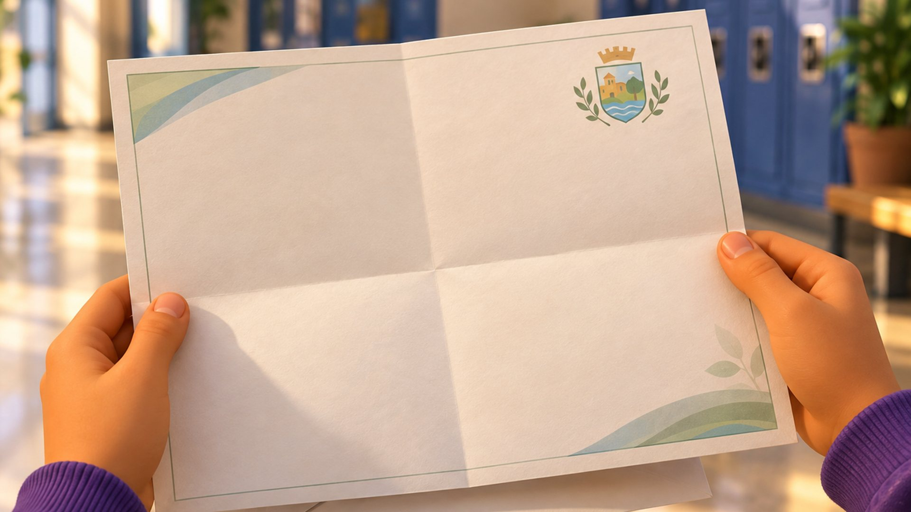
أعضاء مجلس الطلّاب الأعزاء،
مبادرتكم تثبت أنه يمكن الحفاظ على البيئة وإحداث تغيير حقيقي في المجتمع في آن واحد، كل الاحترام لكم!
قررت، لمساعدتكم على تحقيق الحلم، أن أمنحكم منحة بلدية خاصة عن كل 10,000 زجاجة تجمعونها!
واصلوا هذا العمل المبارك!
مع التحيات،
رئيس البلدية
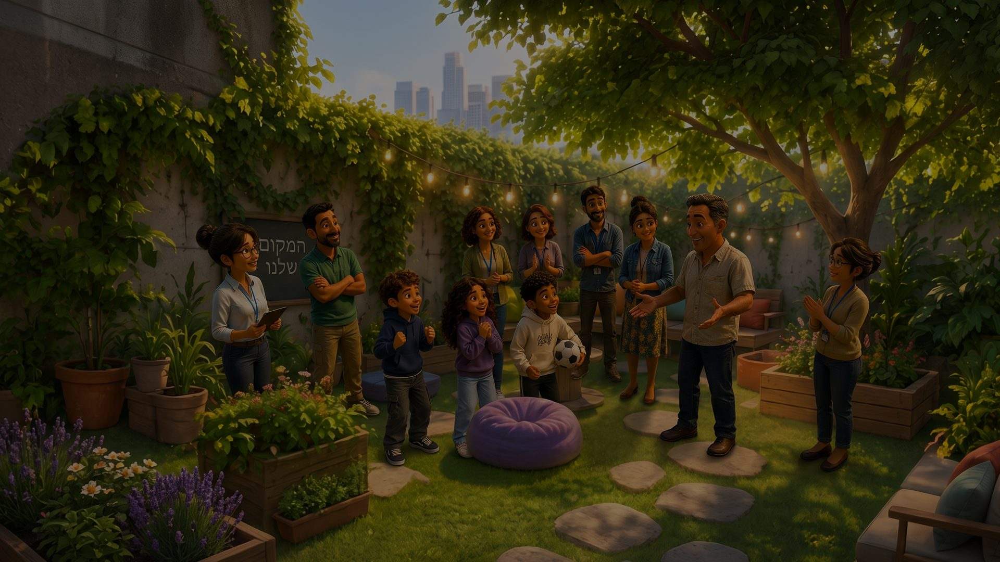
تلميح:
يجب حساب مبلغ المال الذي يحصل عليه الطلّاب مقابل 10,000 زجاجة ثم إضافة المكافأة.
لا تنسوا تحويل رسوم الإيداع من أغورات إلى شواكل.
السؤال رقم 7
يدعو رئيس البلدية جميع المدارس في المدينة إلى الانضمام إلى مشروع جديد لإعادة تدوير الزجاجات في مدارس المدينة!
تُدفع 30 أغورة رسوم إيداع عن كل زجاجة تُسلَّم لإعادة التدوير.
ستمنح البلدية مكافأة إضافية: 500 شيكل عن كل 10,000 زجاجة تُجمع.
احسبوا كم شيكلًا حصل عليه الطلّاب في المجموع مقابل 10,000 زجاجة، شاملةً المكافأة.
ضعوا أعدادًا في الأماكن المناسبة من بين الأعداد التّالية.
(انتبهوا، بعض الأعداد فقط مناسبة).
× : + =
هذه ليست الإجابة، حاولوا مرّة أخرى.
إجابة صحيحة
نحسب أولًا مبلغ المال الذي يحصل عليه الطلّاب مقابل الزجاجات بالشواكل، ثم نضيف المكافأة:
10,000 × 30 : 100 + 500 = 3,500
حصل الطلّاب في المجموع على 3,500 شيكل.
إجابة خاطئة
نحسب أولًا مبلغ المال الذي يحصل عليه الطلّاب مقابل الزجاجات بالشواكل، ثم نضيف المكافأة:
10,000 × 30 : 100 + 500 = 3,500
حصل الطلّاب في المجموع على 3,500 شيكل.
مساعدة:
رأينا في السؤال السابق أن الطلّاب يحصلون على 3,500 شيكل مقابل 10,000 زجاجة، شاملةً المكافأة. كم مرة "يدخل" 10,000 في 150,000؟
السؤال رقم 8
تبيّن في نهاية العام أن الطلّاب في المدرسة، مع سكّان الحي، جمعوا في المجموع 150,000 زجاجة!
تذكير:
تُدفع 30 أغورة رسوم إيداع عن كل زجاجة تُسلَّم لإعادة التدوير.
تضيف البلدية 500 شيكل عن كل 10,000 زجاجة.
احسبوا المبلغ الإجمالي بالشواكل الذي سيُحوَّل إلى المشروع (رسوم الإيداع + مكافأة البلدية).
استعينوا بحل السؤال السابق واكتبوا إجابتكم:
شيكل.
هذه ليست الإجابة، حاولوا مرّة أخرى.
إجابة صحيحة
طريقة حلّ ممكنة:
وجدنا في السؤال السابق أن الطلّاب يحصلون على 3,500 شيكل مقابل كل 10,000 زجاجة، شاملةً مكافأة البلدية.
عدد الزجاجات التي جُمعَت هو 150,000،
150,000 زجاجة تساوي 15 مرة 10,000.
يجب ضرب 3,500 في 15 للحصول على رسوم الإيداع عن الزجاجات والمكافأة.
15 x 3,500 = 10 x 3,500 + 5 x 3,500 = 52,500
المبلغ الذي جمعه الطلّاب شاملًا المكافأة هو 52,500 شيكل
إجابة خاطئة
طريقة حلّ ممكنة:
وجدنا في السؤال السابق أن الطلّاب يحصلون على 3,500 شيكل مقابل كل 10,000 زجاجة، شاملةً مكافأة البلدية.
عدد الزجاجات التي جُمعَت هو 150,000،
150,000 زجاجة تساوي 15 مرة 10,000.
يجب ضرب 3,500 في 15 للحصول على رسوم الإيداع عن الزجاجات والمكافأة.
15 x 3,500 = 10 x 3,500 + 5 x 3,500 = 52,500
المبلغ الذي جمعه الطلّاب شاملًا المكافأة هو 52,500 شيكل
مرحبًا، خطرت لي فكرة أخرى للحل!
حسبت أولًا رسوم الإيداع بالأغورات:
150,000 × 30 = 4,500,000
قسّمت على 100 لأجد المبلغ بالشواكل
4,500,000 : 100 = 45,000
رسوم الإيداع بالشواكل هي: 45,000
حسبت بعد ذلك مكافأة البلدية:
150,000 زجاجة تساوي 15 مرة 10,000 زجاجة.
المكافأة هي:
15 × 500 = 7,500
المكافأة في المجموع هي 7,500 شيكل.
جمعت في النهاية رسوم الإيداع بالشواكل مع المكافأة:
45,000 + 7,500 = 52,500
هذا يعني أنه سيُحوَّل إلى المشروع 52,500 شيكل بالمجموع!
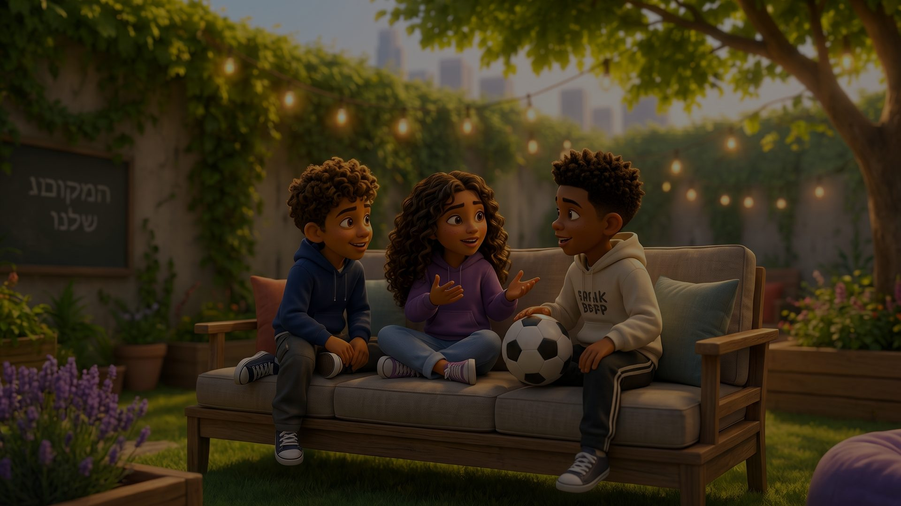
كلّ الاحترام، أنهيت المهمّة!
علامتك هي 0
يجب إغلاق المهمّة من خلال الضغط على X
الآن أغلقوا الوحدة التعليمية
وعودوا للإجابة عن أسئلة المساق في
يمكنكم إغلاق هذه النافذة.